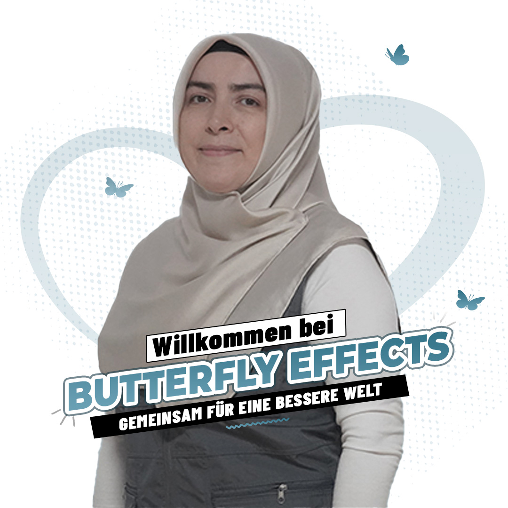

Verantwortung & Vertretung
Halime Erdoğan
Halime Erdoğan wird im offiziellen Impressum als Vertretung des Kelebek Etkisi Kulturverein e. V. und als verantwortlich für die Inhalte genannt. Auf der Bestandswebsite erscheint sie außerdem als ehrenamtlich Mitwirkende.